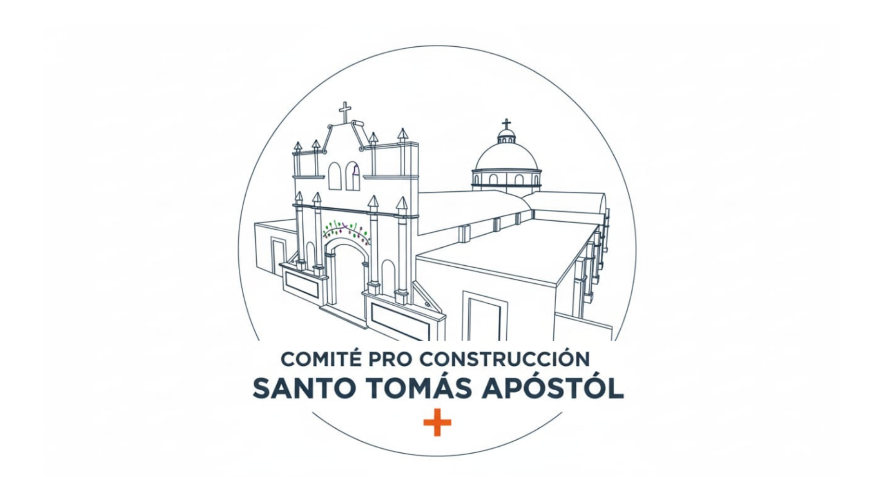
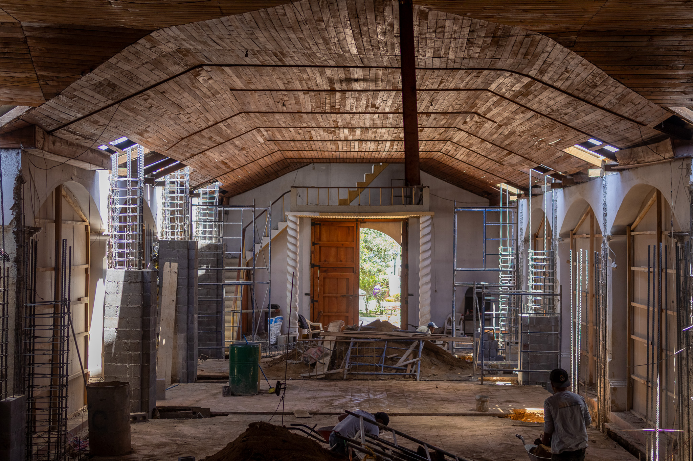
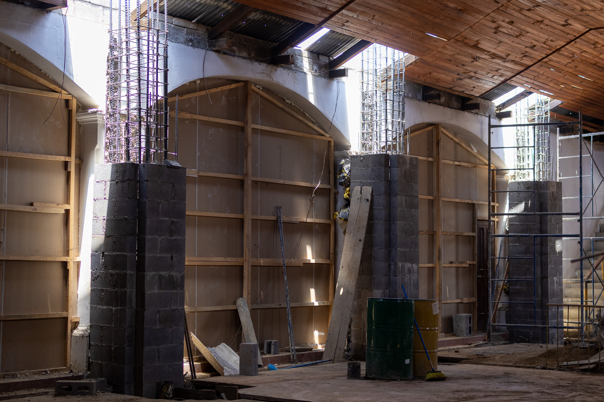
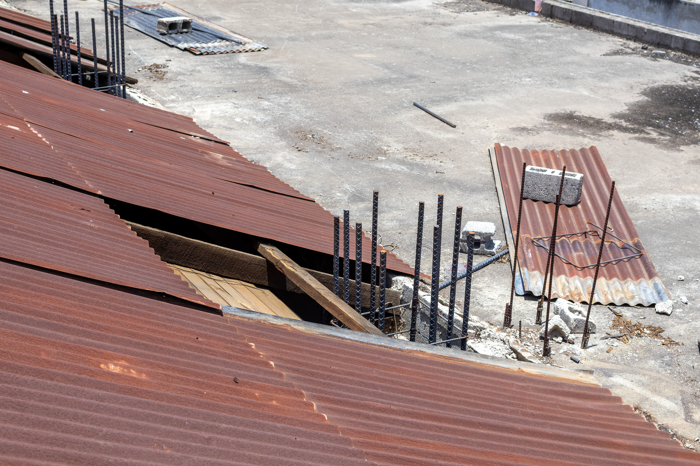
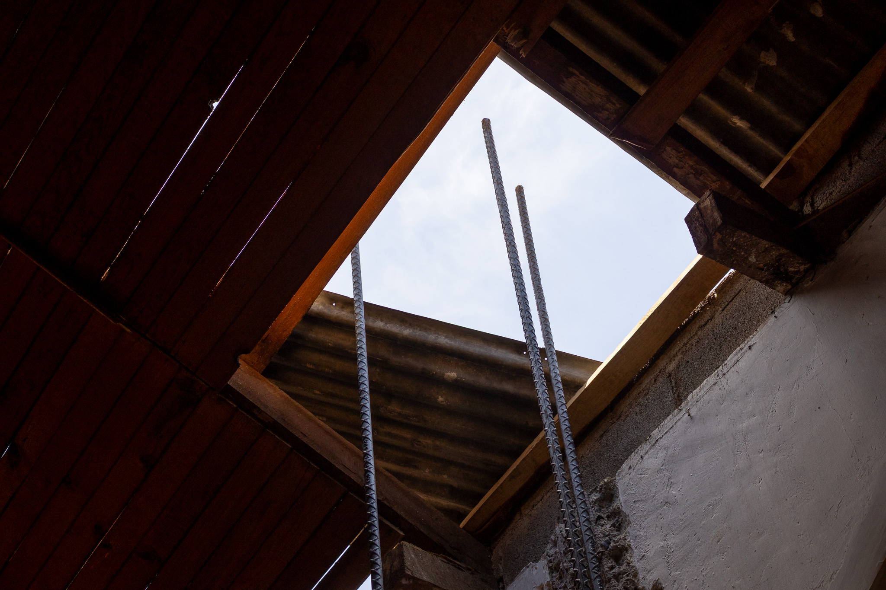
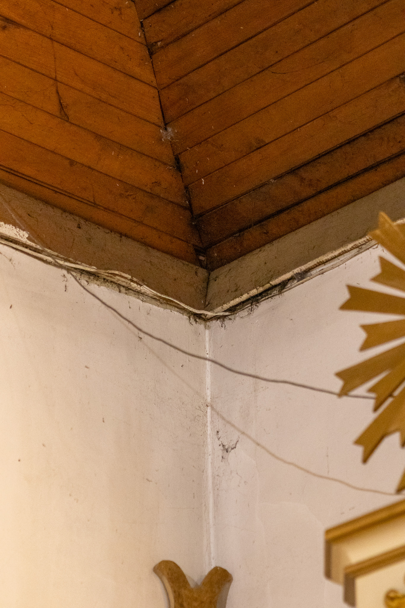
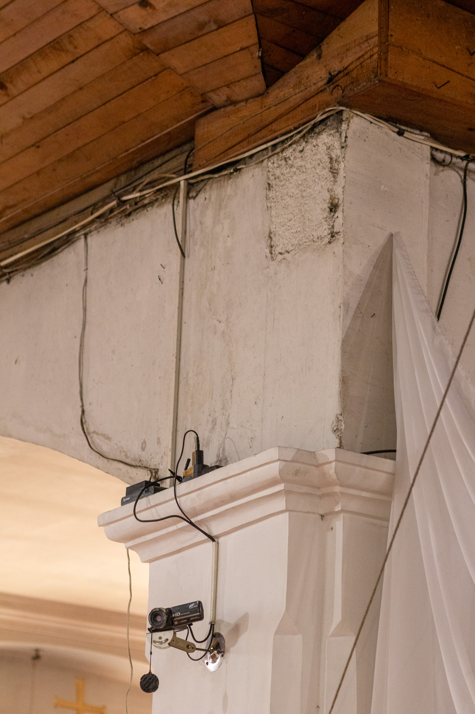

Parroquia
Santo Tomás Apóstol
"Porque donde están dos o tres congregados en mi nombre, allí estoy yo en medio de ellos." - Mateo 18:20
Conoce Nuestro Proyecto de ReconstrucciónHorario de Misas y Servicios
Te esperamos para celebrar juntos la Eucaristía.
Santas Misas
- Lunes No hay misa
- Martes a Sábado 7:00 AM y 5:00 PM
- Domingo (Mañana) 7:00 AM, 9:00 AM, 11:00 AM
- Domingo (Tarde/Noche) 4:00 PM y 7:00 PM
Servicios y Oficina
- Confesiones Sin horario establecido
- Hora Santa Jueves 8:00 AM - 12:00 PM
- Adoración Nocturna Jueves 7:00 PM
- Secretaría Lun. a Vie. 8:00 AM - 12:00 PM / 1:00 PM - 5:00 PM
Nuestra Comunidad
Historia y Misión
Ubicada en el corazón de Santo Tomás Milpas Altas, nuestra parroquia es el centro espiritual de la comunidad. Guiados por el ejemplo de Santo Tomás Apóstol, buscamos fortalecer nuestra fe mediante la oración, la fraternidad y el servicio al prójimo.
Somos una comunidad viva, llena de tradiciones y compromiso evangelizador, donde todas las familias encuentran su hogar espiritual.


Padre Christian González
Párroco
"Bienvenidos a su casa. Oramos juntos por nuestra comunidad."
.jpg)
Padre Romeo
Vicario Parroquial
"Llamados a servir y a caminar juntos en la fe como comunidad."
Proyecto de Reconstrucción
Techo y Construcción de la Nueva Cúpula
Nuestra histórica parroquia necesita tu ayuda. Los trabajos contemplan la reconstrucción del techo dañado y la creación e instalación de una nueva cúpula (de la cual carece actualmente) para embellecer y coronar nuestro templo.

¿Cómo puedes donar?
Puedes realizar tu aporte mediante transferencia o depósito bancario:
Cuenta Monetaria: 3710057595
Nombre: Comité Proconstrucción Santo Tomás Apóstol
Por favor, envía tu boleta o comprobante a nuestro WhatsApp para llevar un registro de tu valiosa ayuda.
Enviar Comprobante

.jpeg)
.jpeg)
.jpeg)
.jpeg)







(Haz clic en cualquier imagen para ampliarla)
Sacramentos
Acompañamos tu crecimiento espiritual en cada etapa.
Bautismo
Iniciación a la fe cristiana para niños y adultos.
Primera Comunión
Preparación y catequesis para recibir a Jesús.
Confirmación
Fortalecimiento del Espíritu Santo en los jóvenes.
Matrimonio
Unión sagrada. Contacta con secretaría para requisitos.
Requisitos para Sacramentos
Papelería del niño(a) y de los padres:
- Certificado de nacimiento original del niño(a) a bautizar, emitido recientemente por el RENAP.
- Fotocopia del DPI de ambos padres.
- Traer la papelería completa al momento de realizar la inscripción en la oficina parroquial y cancelar la ofrenda correspondiente de Q. 100.00.
- Nota importante: Si el niño(a) a bautizar es mayor de 7 años de edad, por favor notificarlo antes en la oficina parroquial para indicarle el proceso a seguir.
Charlas Pre-Bautismales (Obligatorias):
- Son de carácter obligatorio tanto para los papás como para los padrinos.
- Se imparten un día antes del bautizo en horario de 6:00 PM a 7:30 PM en el Salón Parroquial. Se solicita presentarse de 10 a 15 minutos antes de la hora de inicio.
Requisitos para los Padrinos:
- Si son casados: Constancia original and reciente de matrimonio religioso.
- Si es soltero(a): Constancia de soltería emitida por RENAP (reciente y original), constancia original y reciente de Confirmación, y fotocopia de su DPI.
- Restricción importante: Por disposición eclesiástica, los abuelos de los niños no pueden actuar como padrinos de bautismo.
Requisitos para la inscripción de los niños:
- Haber cumplido 8 años de edad al momento de la inscripción.
- El niño(a) debe saber leer y escribir correctamente.
- Certificado de nacimiento emitido por RENAP del niño(a), en original y copia reciente.
- Constancia de bautizo original y de emisión reciente.
- Llenar y firmar la ficha de reglamento de Primera Comunión.
- Ofrenda de inscripción: Q. 80.00 (incluye el libro de formación) más una ofrenda de Q. 100.00 destinada a las flores del día del sacramento.
- Nota especial: Si el niño(a) no ha sido bautizado aún, favor de informarlo en la oficina parroquial para orientarle sobre el proceso correspondiente.
Requisitos para los jóvenes contrayentes del sacramento:
- Haber cumplido 14 años de edad al momento del sacramento.
- Certificado de nacimiento emitido por RENAP del joven, en original y copia reciente.
- Constancia de bautizo original y de emisión reciente.
- Llenar y firmar la ficha de reglamento para jóvenes de Confirmación.
- Nota especial: Si al joven le hace falta recibir algún sacramento previo (Bautizo o Primera Comunión) o si ya vive en unión de hecho, por favor notificarlo en la oficina parroquial para recibir las indicaciones del proceso a seguir.
Requisitos para los Padrinos:
- Si son casados: Constancia original y reciente de matrimonio religioso.
- Si es soltero(a): Constancia de soltería emitida por RENAP (reciente y original), constancia original y reciente de Confirmación, y fotocopia de su DPI.
- Restricción importante: Los abuelos de los jóvenes no pueden actuar como sus padrinos de confirmación.
Papelería requerida para el Expediente (presentar con 2 meses de anticipación):
- Constancia de bautismo y de confirmación original y reciente de ambos contrayentes. (Si a alguno le hace falta algún sacramento, informar con anticipación al párroco o en oficina).
- Una fotografía reciente tamaño cédula a color de cada uno de los novios.
- Fotocopia del DPI de ambos contrayentes.
- Fotocopia del DPI de los testigos designados por cada contrayente.
- Fotocopia del certificado de matrimonio civil (o constancia de que se celebrará antes de la ceremonia de matrimonio religioso).
- Certificado original de matrimonio religioso de los padrinos de boda.
- Constancia original de haber recibido las Charlas Prematrimoniales.
- Ofrenda de la presentación matrimonial y elaboración de expediente: Q. 500.00.
El día de la Presentación Matrimonial (mínimo 1 mes antes del matrimonio):
- Tanto los novios como sus dos testigos asignados deben presentarse puntualmente con sus respectivos DPI originales.
- Nota importante: Si no se presenta la documentación completa en la fecha calendarizada, no se podrá realizar la presentación.
Pláticas Pre-Matrimoniales y Ceremonia:
- A las pláticas prematrimoniales deben asistir exclusivamente los novios. Al finalizar la charla, deben entregar la constancia en la oficina parroquial o adjuntarla a su papelería.
- Tanto los contrayentes como los padrinos deben confesarse el día jueves antes del matrimonio religioso.
- Toda la papelería entregada debe ser reciente y pasará a ser propiedad del archivo parroquial (no será devuelta).
Grupos y Comunidades
Participa activamente en la vida pastoral y comunitaria de nuestra parroquia.
Grupo de Oración Católico Luz Eterna
Espacio dedicado a la oración profunda, la alabanza y la reflexión comunitaria para avivar la llama de la fe en el Espíritu Santo.
Cursillos de Cristiandad
Movimiento eclesial enfocado en posibilitar la vivencia y la convivencia de lo fundamental cristiano en la vida cotidiana.
Grupo Parroquial "Somos uno en Jesús"
Comunidad de hermanos unidos para compartir, crecer espiritualmente, formarse y servir al prójimo en fraternidad.
Ministerio de Lectores
Servicio litúrgico encargado de proclamar la Palabra de Dios con reverencia y claridad en la Eucaristía.
Contacto y Ubicación
📍 Santo Tomás Milpas Altas, Sacatepéquez, Guatemala.
📞 Secretaría: +502 1234 5678
💬 WhatsApp (Donaciones): +502 3938 0017
📍 Cómo llegar (Google Maps) Visítanos en Facebook